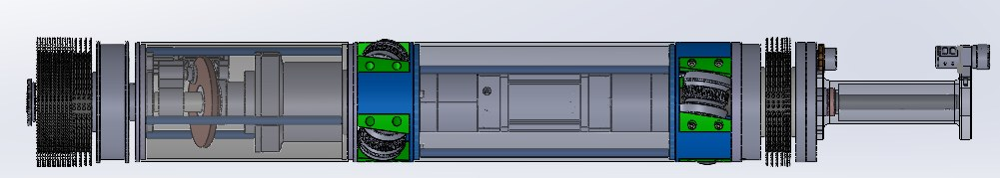

01 / MECHANICAL
Barrel Cleaning Robot — 125 mm Tank Barrel
A purpose-built barrel cleaning robot developed from an initial concept. Our team worked through the component selection, engineering calculations and mechanical assembly design to create an integrated cleaning system. The project has since progressed into component fabrication and physical assembly work.
View project ↗